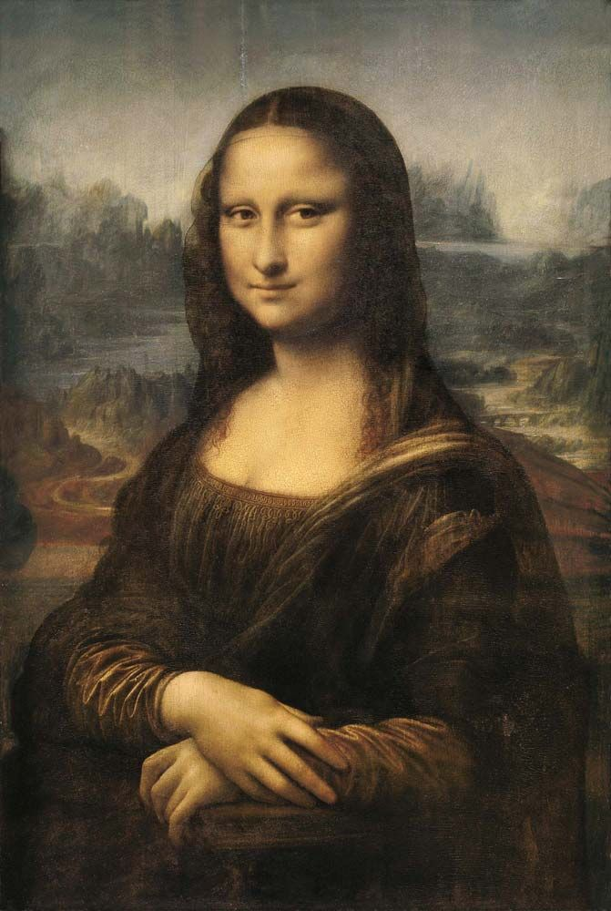
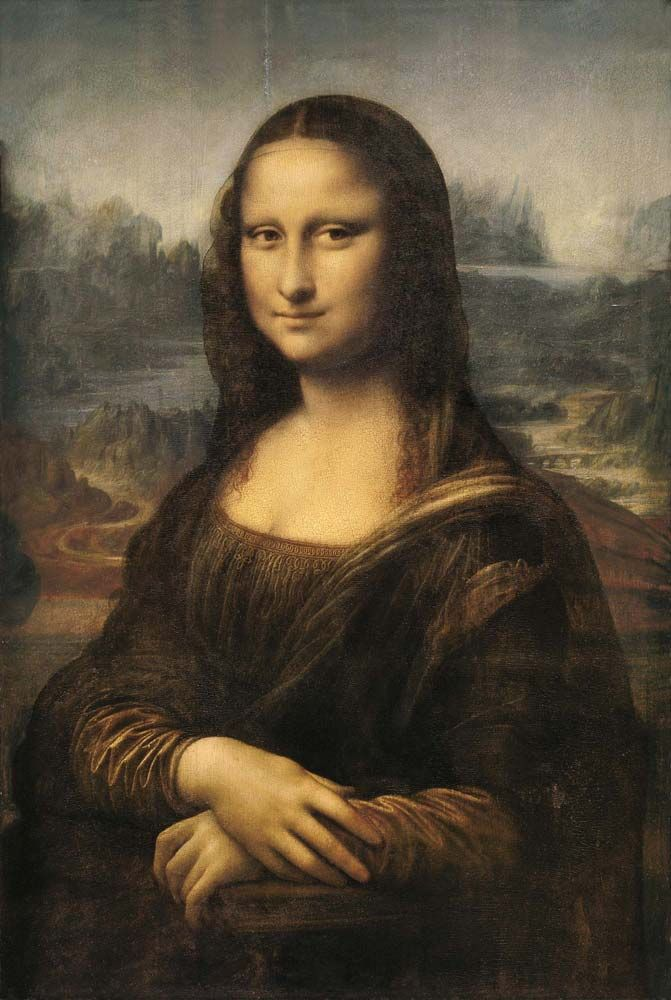

Aerial Screw
An early conceptual design for vertical flight, often considered a precursor to the modern helicopter.
Armored Tank
A revolutionary armored vehicle design featuring 360-degree firing capabilities and protective plating.
Parachute Design
A pyramidal design for a device that would allow a person to safely descend from great heights.
Robotic Knight
An early example of robotics and automation, designed to move and simulate a knight in armor.
Hydraulic Systems
Advanced designs for water pumps, hydraulic jacks, and other fluid-powered machinery.
Multi-Level Bridge
An innovative bridge design featuring multiple levels for different types of traffic and emergency escape routes.
 
